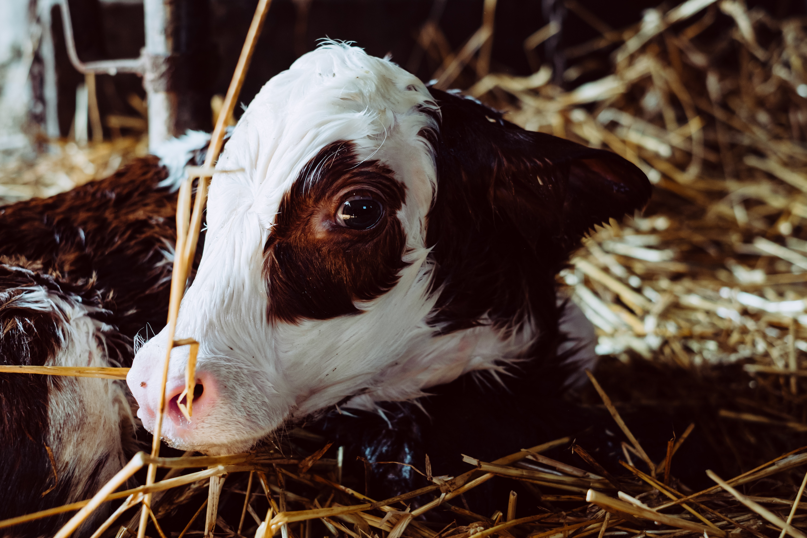
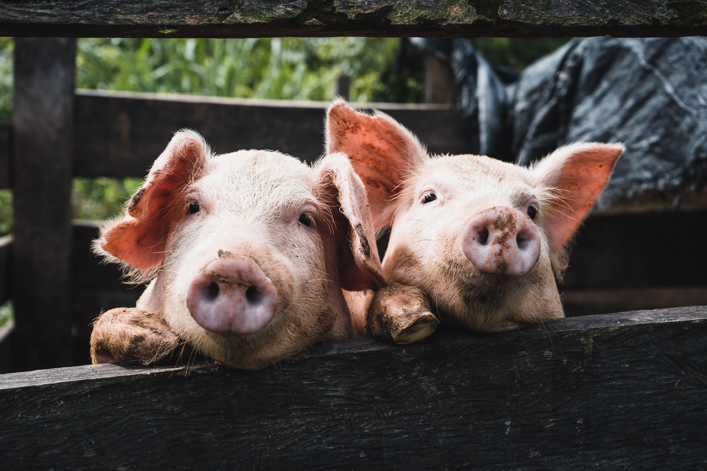
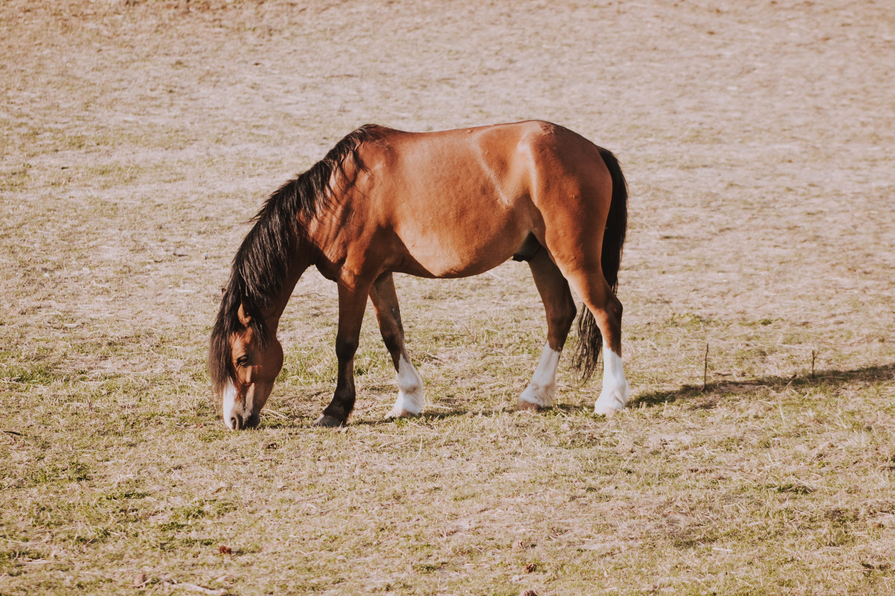
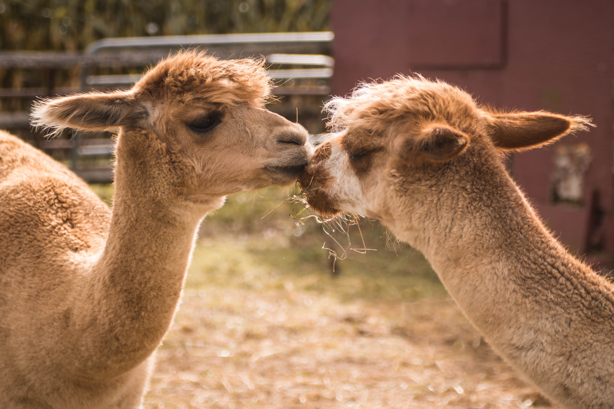
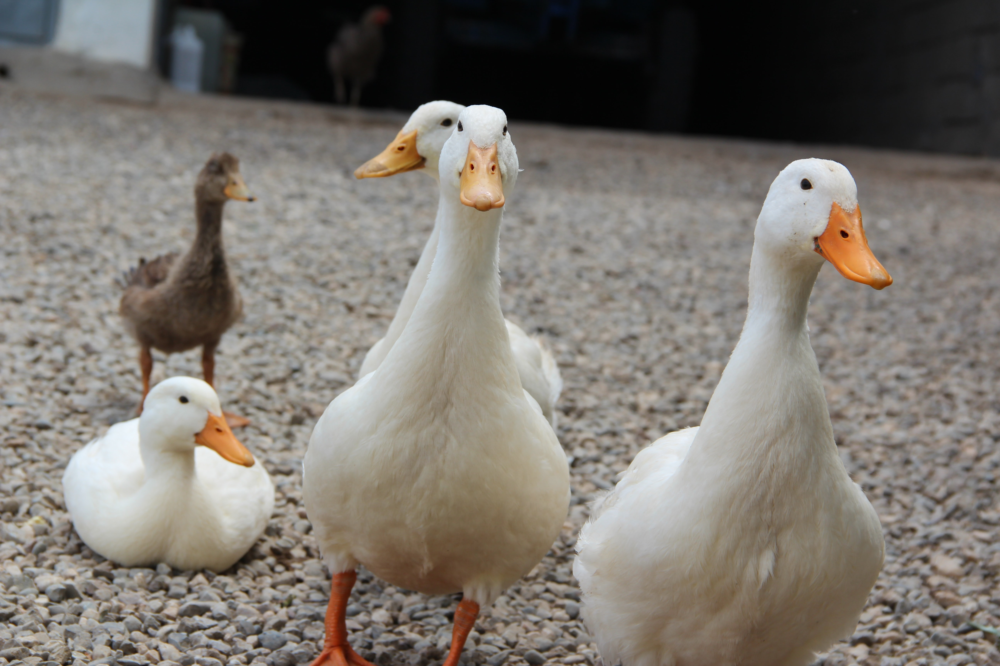

Rinder
- Enthornen, Kastrieren
- Prophylaxe und Entwurmungsberatung
- Vorbereitung für die Alpung
- Jungtiererkrankungen inklusive Dauertropfinfusionen
- Klauenbehandlungen
- Gynäkologische Untersuchungen und Geburtshilfe
- Eutererkrankungen
- Bluttransfusionen
- Behandlung von stoffwechselbedingten Störungen
- Künstliche Besamungen (Swissgenetics)
- Chirurgie: Kaiserschnitt, Labmagenverlagerung, Nabelbruch, Urachus, Nabelabszess, Kastration, Zitzenverletzungen, Zitzenamputation, Wundversorgung
- Computergestützte Bestandesbetreuung (ITB)
- Bestandesdiagnostik und Betreuung bei Sanierungen
- Trächtigkeitsuntersuchungen mittels Ultraschall
- Betreuung von Mastkälbern-, Munimastbetrieben
- KGD-Vertragstierärzte
- FTVT
- Trokar setzen bei chronischen Blähungen

Schweine
- Bestandesbetreuung inklusive SGD- und SuisSano-Besuche
- Geburtshilfe
- Injektionsnarkose für Kastration
- Sektionen und Probenahmen für weitere Untersuchungen direkt vor Ort
- Behandlung kranker Tiere
- Chirurgie: Chiber, Brüchler, Kaiserschnitt

Ziegen und Schafe
- Enthornen, Kastrieren
- Prophylaxe und Entwurmungsberatung inklusive Kotproben
- Vorbereitung für die Alpung
- Jungtiererkrankungen
- Klauenbehandlungen inklusive Moderhinke-Sanierung
- Geburtshilfe
- Eutererkrankungen
- Bluttransfusionen
- Behandlung von stoffwechselbedingten Störungen
- Chirurgie: Kaiserschnitt, Kastration, Wundversorgung
- Betreuung bei Sanierungen
- Trächtigkeitsuntersuchungen mittels Ultraschall
- FTVT

Pferde
- Impfungen
- Entwurmungen
- Homöopathie

Kameliden
- Prophylaxe und Entwurmungsberatung
- innere Medizin
- Jungtiererkrankungen

Kleintiere
- Impfungen ohne Tests
- Entwurmungen
- Euthanasien